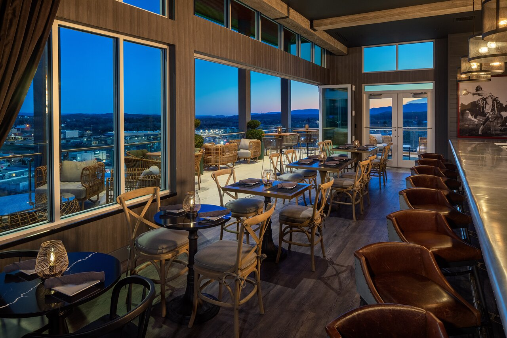
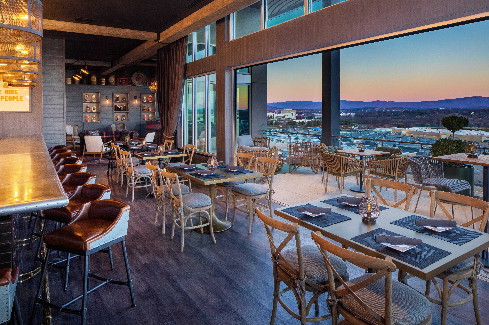
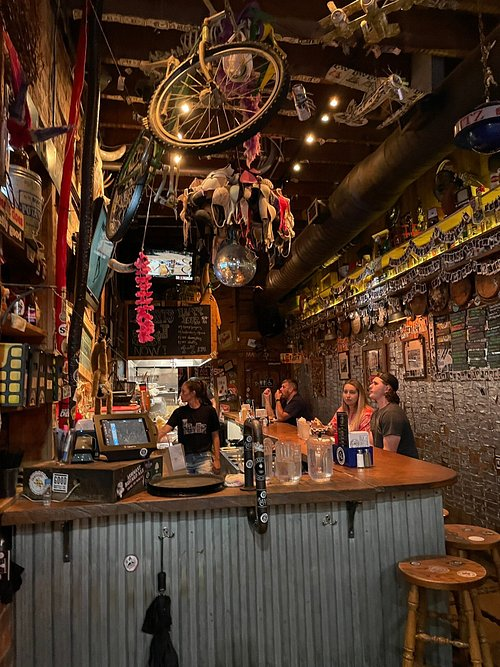
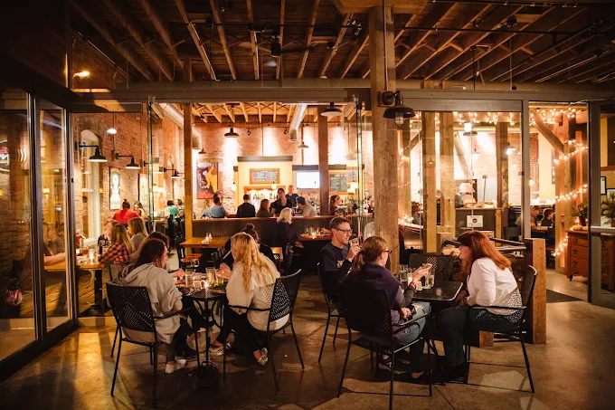
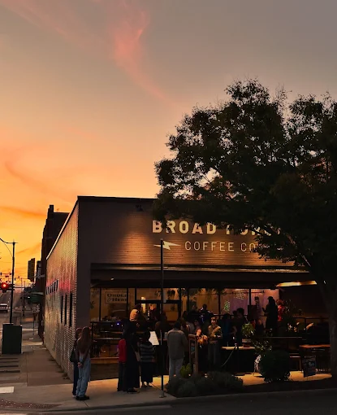

LOCAL EATS · 01
Come hungry.
Leave happy.
From quick campus-area bites to a dinner worth dressing up for, Harrisonburg has plenty to put on your list.
Browse the table ↓
A seat at the table is waiting.A FEW PLACES TO START
Put these on your list.

CASUAL FAVORITE
Jack Brown's
A laid-back downtown stop known for burgers and a lively atmosphere.
Menu & details ↗
ITALIAN COMFORT
Bella Luna Wood-Fired Pizza
Pizza and Italian-inspired comfort food for a relaxed meal with friends.
Menu & details ↗
COFFEE BREAK
Broad Porch Coffee Co.
A cozy café stop for coffee, a slower morning, or a study break.
Menu & details ↗